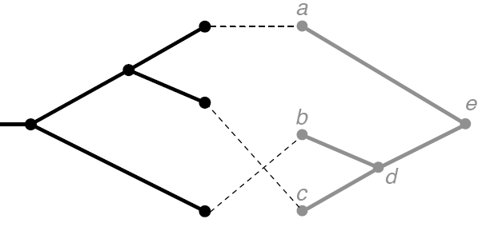
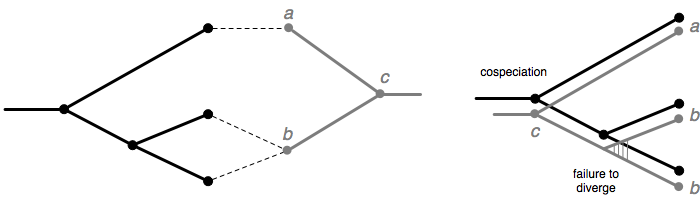
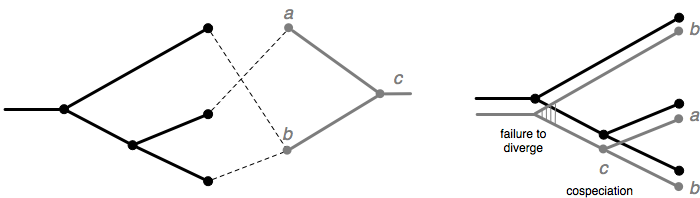

Jane's Cost Models and Events
Cophylogeny reconstruction attempts to find a mapping of the parasite tree onto the host tree assuming some combination of cospeciation, duplication, host switching, loss, and failure to diverge events. Each of these five event types has an associated cost that may be specified by the user, and we seek to find a mapping of minimum total cost.
As an example, consider the "tanglegram" below where the host tree is shown in black on the left and the parasite tree is shown in gray on the right. The associations of the tips are shown with dotted lines.
- A cospeciation occurs when the host and parasite speciate simultaneously.
- A duplication occurs when a parasite speciates and both of the new species remain on the same host.
- A host switch occurs when a parasite speciates and one of the new species switches onto a different host.
- A loss occurs when an edge of the parasite tree passes through a node of the host tree.
Failure to Diverge Events:
A new feature in Jane 3 is the addition of failure to diverge events. A failure to diverge occurs when a host speciates and the parasite remains on both new host species. Each failure to diverge event corresponds to a specific parasite failing to diverge. Note that only parasite tips are permitted to fail to diverge in Jane. Moreover, once a parasite tip has failed to diverge, it is no longer permitted to switch hosts. This ensures that Jane will only use a failure to diverge event when absolutely necessary. That is, for a parasite tip to fail to diverge at some host node, it must live on a host tip descending from each child of that host node.
The figure below give an example of a "tanglegram" involving a parasite that lives on multiple hosts and a possible mapping of the parasite tree onto the host tree using failure to diverge events. Note that the host tree is shown in black and the parasite tree in gray. In this example, parasite b fails to diverge along the parasite edge connecting parasite b to parasite c.
It is also possible for parasite tips to fail to diverge along parasite edges that are not tips. The figure below demonstrates this possibility. Here, parasite b fails to diverge along the parasite edge occurring before node c. This implies that node c and its preceding edge are actually the same species as parasite b. In assigning failure to diverge events along some parasite edge, Jane is in effect determining the identity of the parasite species alive at that edge. For this reason, once the identity of an edge is known to be the same as a certain parasite tip, Jane will prevent any other parasite tips from failing to diverge at the same edge.
Cost Models:
Jane supports two different cost models: one is an edge-based cost model used in earlier versions of TreeMap and the other is a node-based cost model used in CoRe-PA. The cost model can be selected by the user (see the tutorial for details).In both cost models, the number of losses and host switches are counted the same way. The two models differ in how they count the number of cospeciations, duplications, and failure to diverge events.
- Edge-Based Cost Model (the default model in Jane)
-
In the edge-based cost model, when a cospeciation, duplication, or failure to diverge event occurs, this event "spawns" two children (assuming a binary phylogenetic tree). Each child is "billed" the cost of cospeciating, duplicating, or failing to diverge. Thus what appears to be a single event is in fact billed twice. Moreover, each host switch event considered to be a duplication followed by a host switch so what appears to be a single host switch event is actually billed as two duplications and a host switch. The motivation for this model is that a k-way multifurcation in the parasite tree that is mapped (for example) as a duplication event should be "billed" more than a standard bifurcating duplication. Thus, the edge-based model "bills" proportionally to the value k in the k-furcation. However, it should be noted that Jane currently only supports bifurcating trees.
- Node-Based Cost Model
-
In the node-based cost model, each cospeciation, duplication, and failure to diverge event is "billed" just once for the cost of that event and host switches do not "bill" for duplication events.
Back to Jane Homepage